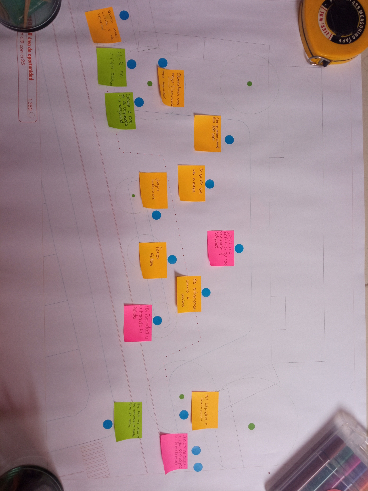
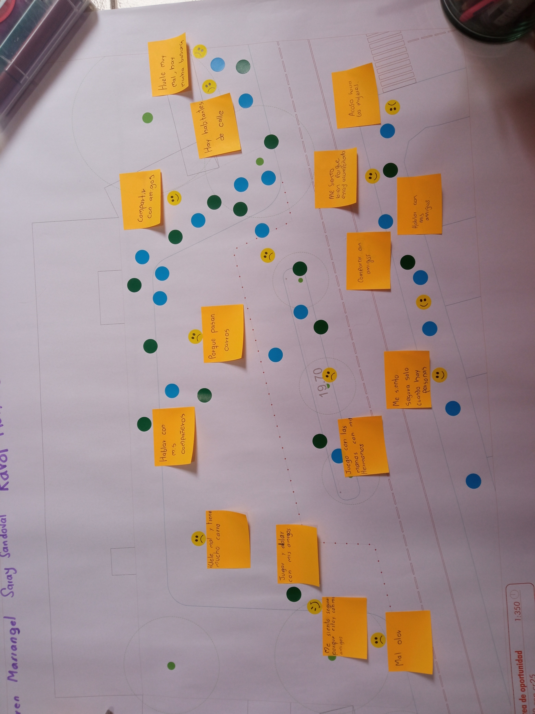
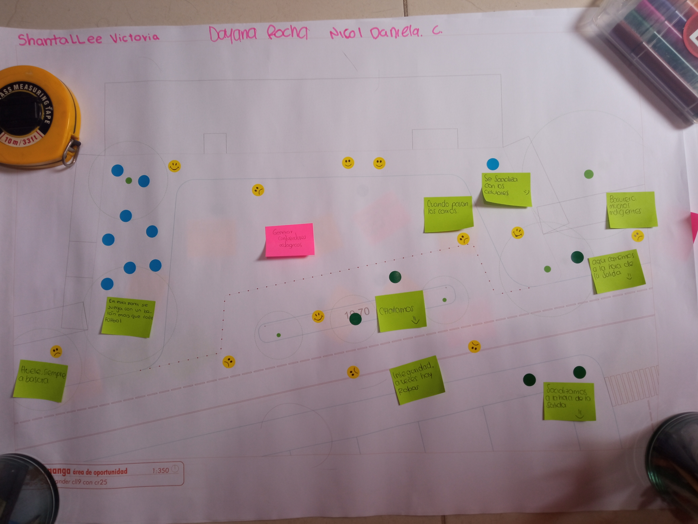

Hola tu!
Soy Raysa Karina, hago parte de Bicidiversa, y quiero aquí presentarte un proyecto en el que trabajé y del cual me siento muy muy orgullosa, hago esta publicación porque he pensado en muchas cosas, en cómo hacerlas y al final no las realizo, esta publicación es el inicio. A continuación la historia:
Un día en pandemia, recibo una invitación a ser parte de un proyecto por ser ciclista urbana y mujer que promueve la bici como herramienta de apropiación de derechos, ella, Marina, de Despacio me dice que hay un proyecto y me considera a mi como la candidata, a mí? pueden creer, no sabía que el no creerme con la capacidad de trabajar en algo como eso se llama síndrome del impostor…en fin, en serio fue a mi!!! En primera instancia, me negué con la excusa del cuidado de mi madre y la pandemia, realmente no me creía capaz; el proyecto en sí no había iniciado, pero lo haría en algún punto, luego de que pasó un tiempo y ya el proyecto sería una realidad, adivinen quien dijo que si??? pues yo! Tengo una amiga maravillosa que me da una energía genial (mi Xiomi) y una barra que siempre ve cosas en mi que no veo yo, mis amigos y amores llegados gracias a ser parte de BiciRed Colombia
Entonces, este proyecto formaba parte de una iniciativa más amplia que abordaba la movilidad diversa y de género, buscaba promover el uso de modos activos al transportarse, reconociendo las necesidades específicas de las mujeres, niñas y mujeres mayores, pues es algo que cobra cada vez más relevancia en los procesos de planeación, diseño y construcción de ciudades y proyectos de movilidad sostenible. Todo esto considerando que no incluir una perspectiva de género y de interseccionalidad en dichos proyectos implica necesariamente dejar atrás una parte importante de la población y retrasar el proceso de cambio modal hacia modos más sostenibles. Ver la publicación aquí: Género Y Movilidad Activa: Acciones Para No Dejar A Nadie Atrás En Colombia
Esta publicación busca visibilizar las diferencias, desigualdades e inequidades en los patrones de viaje y del uso de la movilidad activa de las mujeres, niñas y mujeres mayores en tres ciudades intermedias de Colombia. Esta publicación fue realizada por Despacio con el apoyo de la Iniciativa Alemana de Tecnología Climática (DKTI) y la Cooperación Alemana para el Desarrollo (GIZ por sus siglas en alemán) – Colombia en el marco del proyecto de investigación sobre las barreras a las que se enfrentan las mujeres, las niñas y las mujeres mayores en su movilidad activa en las ciudades de Barranquilla, Bucaramanga y Pasto. Y yo fui parte del proyecto que llegó después de la publicación!!!
La GIZ, incluyó a Bucaramanga en un proyecto destinado a ciudades intermedias para invertir en intervenciones de urbanismo táctico. Tras evaluar varios puntos y considerar aspectos como la seguridad y la accesibilidad, se identificó la Bahía de un colegio como un punto crítico, un punto propuesto por la comunidad, cheka este video para el antes y despues:
De verdad no pierdas el antes y despues!
Este colegio, el Colegio Santander, comparte ubicación con la Universidad Industrial de Santander y es un lugar donde las madres suelen encargarse del transporte y cuidado de sus hijos. La entrada única del colegio se veía obstruida por vehículos, lo que dificultaba la seguridad y movilidad de los estudiantes.
La propuesta de intervenir la Bahía del colegio surgió de la comunidad de ciclistas urbanos y fue respaldada por diversas organizaciones, incluyendo la alcaldía y la GIZ. Se realizó un taller participativo con estudiantes para mapear la situación y recopilar sus opiniones sobre el espacio.


Se identificaron problemas como basura acumulada, falta de iluminación y congestión vehicular.
El diseño de la intervención se llevó a cabo de manera colaborativa, involucrando a todas las partes interesadas, incluyendo la comunidad escolar y local. Se realizaron encuestas antes y después de la instalación para evaluar el impacto de la intervención. La participación ciudadana fue fundamental en todo el proceso.
Este fue el resultado:
De verdad no pierdas el antes y despues!
La intervención fue bien recibida por la comunidad, ya que proporcionó un espacio seguro y mejorado en un barrio carente de parques y espacios comunitarios. Este proyecto ejemplifica un enfoque de diseño centrado en el usuario y la colaboración interdisciplinaria, elementos clave del design thinking, que podrían aplicarse en otros proyectos similares.
Esta historia la publico porque quiero sean parte de mis proyectos en un par de cursos que hice en Platzi, entonces:
En este proyecto de intervención urbana en Bucaramanga, se implementaron varias etapas del proceso de design thinking para abordar los desafíos de movilidad de manera efectiva. Veamos cómo se aplicaron estos pasos:
- Empatizar y definir el problema: El proceso comenzó con la identificación de un problema específico: la obstrucción de la Bahía de un colegio debido a la congestión vehicular, lo que dificultaba la movilidad de los estudiantes. Esta identificación se realizó a través de la escucha activa de la comunidad, incluidos los ciclistas urbanos y los estudiantes.
- Idear y prototipar soluciones: Una vez identificado el problema, se generaron ideas creativas para abordarlo. Se realizaron talleres participativos con estudiantes para diseñar posibles soluciones y se construyeron prototipos de las propuestas más prometedoras. Esto incluyó la creación de diseños conceptuales y la planificación de intervenciones físicas en la Bahía del colegio.
- Testear y mejorar: Los prototipos desarrollados fueron sometidos a pruebas y evaluaciones para obtener retroalimentación. Se realizaron encuestas antes y después de la instalación de las intervenciones para evaluar su impacto en la comunidad. Esta retroalimentación fue crucial para ajustar y mejorar las soluciones propuestas.
- Implementar y evaluar: Finalmente, las soluciones diseñadas fueron implementadas en la Bahía del colegio. Se monitoreó continuamente su efectividad y se evaluaron los resultados obtenidos. La participación ciudadana fue fundamental durante todo el proceso, asegurando que las soluciones fueran verdaderamente centradas en el usuario y en las necesidades de la comunidad.
Este enfoque basado en el design thinking permitió abordar de manera efectiva los desafíos de movilidad en Bucaramanga, proporcionando soluciones innovadoras y centradas en las personas. La colaboración interdisciplinaria y la participación ciudadana fueron elementos clave para el éxito de este proyecto.
Y finalmente, el ser parte del proyecto y el hacer esta publicación pueden incluirse como proyectos de los cursos: